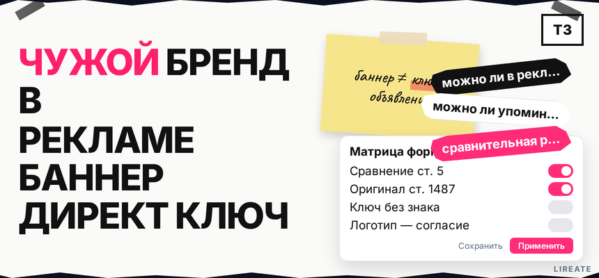
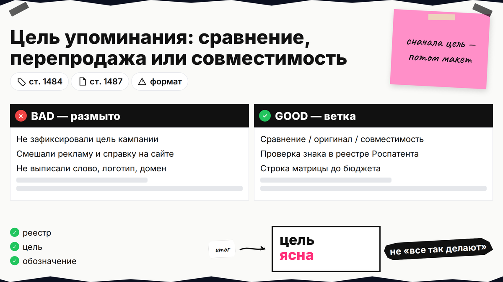
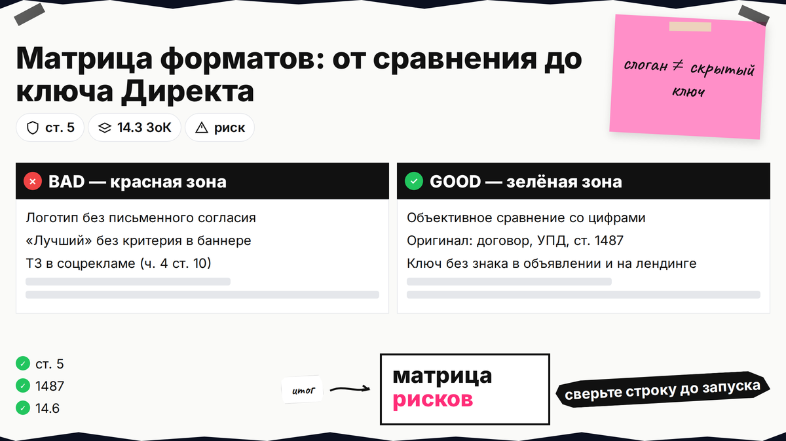
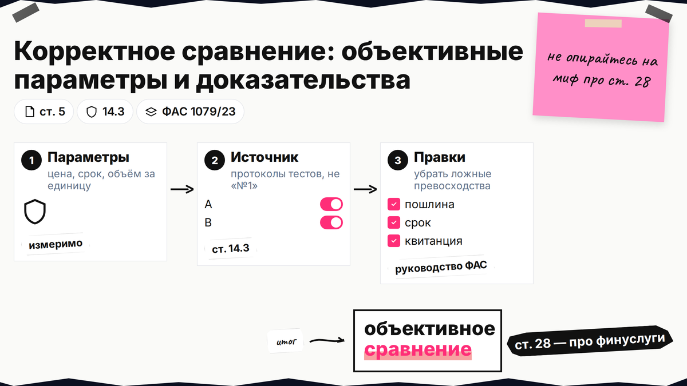

В баннере хотят назвать конкурента, в Директе - купить ключ с чужим брендом, на лендинге - поставить чужой логотип, а через неделю приходит претензия по товарному знаку или письмо от ФАС. Закон не запрещает любое упоминание чужого имени: важны формат, цель и доказательства. Ниже вы отнесёте макет к зелёной, жёлтой или красной зоне по ГК, ФЗ "О рекламе" и закону о конкуренции, соберёте документы до запуска и поймёте, когда без письменного согласия правообладателя лучше не стартовать кампанию.

TL;DR / Быстрый инсайт: По ст. 1484 ГК РФ знак в рекламе без согласия правообладателя нельзя, если есть риск смешения; исключение - исчерпание (ст. 1487) для оригинала в обороте. Сравнения - ст. 5 и ст. 14.3 ЗоК. Ключи без знака в объявлении часто не нарушают 1484; в соцрекламе ТЗ запрещены (ч. 4 ст. 10).
Товарный знак - имя или логотип, по которым узнают товар. Реклама продвигает товар до неопределённого круга лиц; справка на сайте без призыва купить оценивается иначе, но граница между информацией и рекламой спорная. Отсутствие запрета у правообладателя не равно согласию (п. 1 ст. 1229). Материал на 20.10.2026 не заменяет индивидуальную консультацию юриста.

Зафиксируйте цель: сравнение, перепродажа оригинала, "совместимо с…", отзыв или намёк. Выпишите слово, логотип, домен.
Делайте: проверить знак в Поисковой платформе Роспатента и чек-листе L01. Не делайте: опираться на "все так делают" - спор смотрят на ваш макет.

Один и тот же бренд в слогане и в скрытом ключе Директа несут разный риск: первый чаще попадает под ГК и ФЗ "О рекламе", второй - под споры о недобросовестной конкуренции. Сверьте креатив с таблицей и отметьте свою строку перед согласованием бюджета.
| Формат упоминания | Типичный риск | Что сделать до запуска |
|---|---|---|
| Сравнение с названием конкурента и цифрами | Некорректное сравнение (ст. 5), ст. 14.3 ЗоК | Измеримые параметры, источник цифр, без "лучший" без критерия (руководство ФАС 1079/23) |
| Реклама оригинального товара с чужим ТЗ на упаковке | Нарушение ст. 1484 или исчерпание ст. 1487 | Договор с дистрибьютором, УПД, цепочка ввода в оборот; п. 31 Пленума ВАС № 58 |
| "Совместимо с [бренд]" (аксессуары, расходники) | Смешение, спор о необходимости согласия | Нейтральная формулировка, без логотипа, чужой знак не доминирует в макете |
| Только ключевое слово в контексте, без знака в объявлении и на лендинге | Часто нет нарушения 1484; возможна ст. 14.6 | Проверить текст объявления и целевую страницу; ориентир - письмо ФАС 21.10.2019, дела СИП |
| Логотип чужой компании на баннере или в блоке "клиенты" | ст. 1229, 1484; ложные сведения о правах (п. 7 ч. 3 ст. 5) | Письменное согласие правообладателя или убрать логотип |
| Намёк, пародия, негатив про конкурента | Порча репутации (п. 2 ч. 2 ст. 5) | Юридическая вычитка; не запускать без оценки риска |
| Бренд в социальной рекламе | Прямой запрет ч. 4 ст. 10 ФЗ "О рекламе" | Не использовать ТЗ в таких кампаниях |
Сквозная схема: идея креатива → проверка знака в реестре → строка матрицы → правки макета → маркировка интернет-рекламы по действующим правилам → при претензии - ответ по порядку L02

Назвать конкурента можно при объективном сравнении (п. 1 ч. 2 ст. 5). "Лучший" и "№ 1" без критерия бьют по ст. 14.3 и руководству ФАС 1079/23.
Делайте: сравнивать цену за единицу, срок службы, объём - с протоколами тестов. Не делайте: ссылаться на ст. 28 ФЗ "О рекламе" - она про финуслуги, не про обычные товары.
По ст. 1487 знак на оригинале в обороте в РФ не нарушает право, если товар ввели с согласия владельца. П. 31 Пленума ВАС № 58: реклама допустима, если виден независимый продавец.
Делайте: хранить договор, УПД, письмо о дилерстве. Не делайте: оформлять лендинг как официальный магазин бренда - риск смешения по п. 3 ст. 1484.
Ключи с чужим брендом ФАС не считает использованием ТЗ в смысле ГК (письмо 21.10.2019); СИП отказывали в компенсации, если знака не было в объявлении и на сайте (А56-49696/2020, С01-954/2023, А40-58038/2024).
Делайте: проверить объявление и лендинг на логотип и чужое название. Не делайте: считать ключи абсолютно безопасными - возможна ст. 14.6.
Логотипы партнёров без договора - типичная претензия по ст. 1229 и п. 7 ч. 3 ст. 5. Согласие часто оформляют письмом; для долгого брендинга надёжнее лицензия.
Делайте: запросить письменное разрешение и хранить в деле. Не делайте: ставить чужой логотип "для красоты".
| Куда жалуются | Норма | Чего ждут |
|---|---|---|
| Суд | ст. 1515 | Компенсация 10 000 - 10 000 000 руб., снять знак с рекламы |
| ФАС | ст. 5 | Прекратить распространение, исправить текст |
Делайте: пройти список за день до старта. Не делайте: путать ERID с правом на бренд.
Не игнорируйте письмо: по ст. 1515 нужно прекратить использование знака. Порядок ответа - в гайде L02. Делайте: зафиксировать дату претензии. Не делайте: снова крутить спорный баннер без оценки риска.
Цель и обозначения → реестр Роспатента → матрица форматов → правки сравнения или документы на оригинал → чек-лист → запуск. При письме от бренда - маршрут L02. Лирейт помогает с защитой знака и репутации без обещаний "безрискового" креатива. Сомневаетесь в однородности товаров - сверьтесь с поверенным до оплаты медиабюджета.
Материал проверен: редакция Лирейт, практика рекламы и товарных знаков для малого и среднего бизнеса.
Достоверность данных: ст. 1229, 1484, 1487, 1515 ГК РФ, ст. 5 и 10 ФЗ "О рекламе", ст. 14.3 и 14.6 ЗоК, письмо ФАС 21.10.2019 и руководство 1079/23 сверены с КонсультантПлюс и ГАРАНТ на 20.10.2026. Показы Яндекс Вордстат в среде подготовки материала не запрашивались.
Да, если сравнение объективное, цифры проверяемы и нет некорректных превосходных степеней без критерия. Подготовьте расчёт цены за сопоставимую единицу и источник данных.
Часто не нарушает исключительное право по 1484, если знака нет в тексте объявления и на лендинге; суды так решали в ряде дел. Риск недобросовестной конкуренции остаётся - проверьте заголовок, быстрые ссылки и сниппет: не должно быть смешения с чужим брендом.
При правомерном вводе товара в оборот в РФ действует исчерпание прав (ст. 1487). Соберите документы поставки; если оформление рекламы имитирует официальный магазин бренда, согласие или смена дизайна всё равно могут понадобиться.
Только с письменного разрешения правообладателя на использование ТЗ в рекламе и на сайте. Без него - претензия по ГК и риск недостоверной рекламы о правах.
Суд по ГК взыскивает компенсацию и требует убрать знак (ст. 1515). ФАС проверяет добросовестность и достоверность рекламы (ст. 5) и может обязать прекратить распространение нарушающего объявления.
По ст. 1515 - от 10 000 до 10 000 000 рублей либо двукратный размер стоимости права использования по выбору правообладателя. Суд учитывает характер нарушения и срок.
В социальной рекламе упоминание товарных знаков запрещено ч. 4 ст. 10 ФЗ "О рекламе". Для иных форматов оценивайте, является ли сообщение рекламой и есть ли согласие правообладателя.